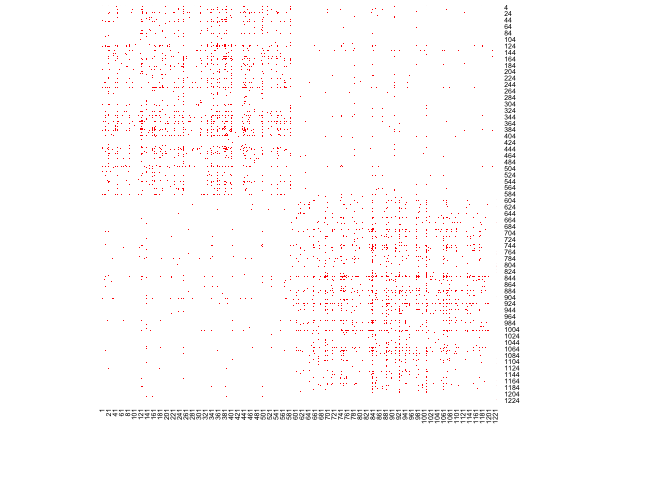
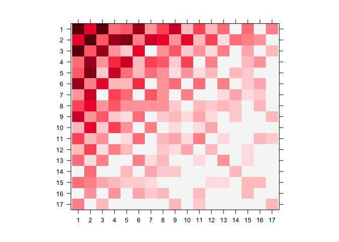
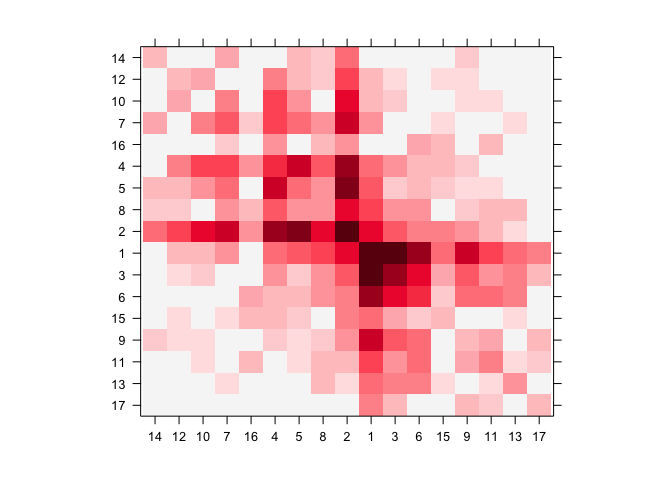
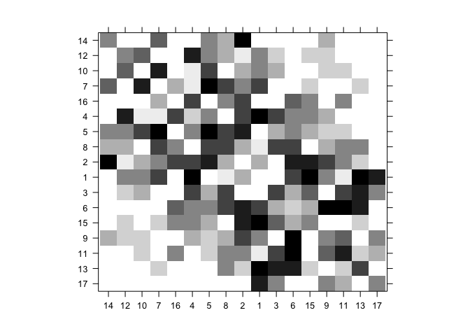
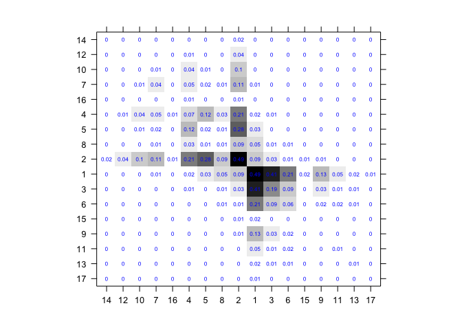
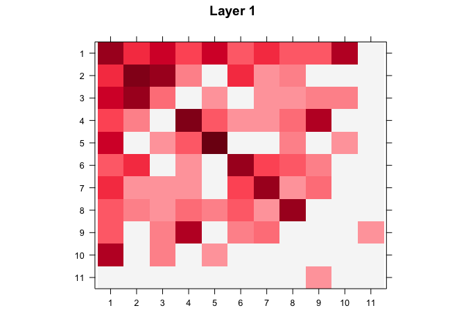
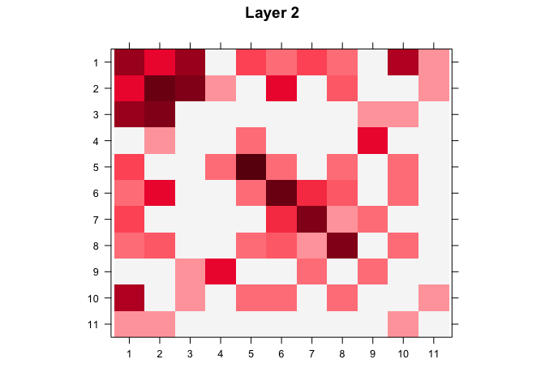
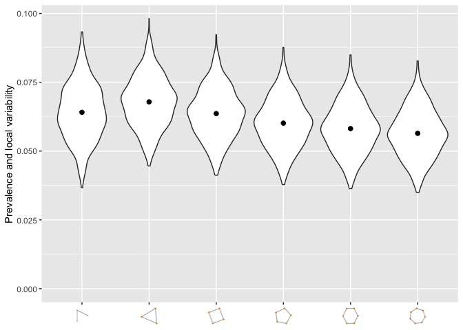
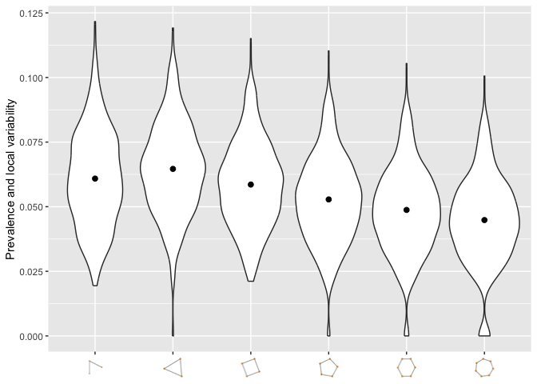

nethist estimates network histograms, a blockmodel approximation to the graphon (Wolfe and Olhede 2013) underlying a network’s connectivity pattern, for single-layer and multilayer networks. It implements the profile-likelihood method of Olhede and Wolfe (2014) and the least-squares method of Gao et al. (2015) for single-layer networks, as well as the multilayer extension of Song and Olhede (2026). The package also provides tools for bandwidth selection, diagnostic plots, and covariate visualization. Its functions accept undirected simple graphs without self-loops as either igraph objects or adjacency matrices.
Installation
You can install the development version of nethist from GitHub with:
# install.packages("devtools")
devtools::install_github("EnigmaSong/nethist")Example
Here are basic examples using political blog data set in the package:
Network histogram
We use polblog dataset in the package for our examples.

We can estimate a network histogram from the political blog data and plot it.
## Example code using polblog data set
set.seed(42)
hist_polblog <- nethist(polblog, h = 72) #using user-specified bin size.
plot(hist_polblog)
Plotting option
heatmap() style
plot() provides 2D plot as heatmap().
You can use a user-specified indices for plots. Here is an example:
print(ind)
#> [1] 14 12 10 7 16 4 5 8 2 1 3 6 15 9 11 13 17
## Users can specify the index order of heatmap
plot(hist_polblog, idx_order = ind)
## Users can specify the color palette
library(RColorBrewer)
plot(hist_polblog, idx_order = ind, col.regions = brewer.pal(9, "Greys"))
You can display the estimated block probabilities by setting type = prob and prob=TRUE.
## Users can specify the color palette
plot(hist_polblog, idx_order = ind, type = "prob", prob= TRUE, prob.col = "blue",
col.regions = colorRampPalette(colors=c("#FFFFFF","#000000"))(200))
Multilayer network histogram
multinethist() extends the same estimation to multilayer networks. Here we use the first two layers of the IndianVil dataset, a socio-economic network with 12 layers.
data(IndianVil)
set.seed(42)
hist_indianvil <- multinethist(IndianVil[, , 1:2], h = 20L)
plot(hist_indianvil)

fitted() extracts a submatrix of the fitted graphon for one or more layers.
fitted(hist_indianvil, set1 = 1:10, set2 = 1:10, layer = 1)
#> [,1] [,2] [,3] [,4] [,5] [,6] [,7] [,8]
#> [1,] 8.510526 5.053125 1.155000 0.144375 0.866250 0.866250 0.866250 0.866250
#> [2,] 5.053125 0.000000 1.010625 0.577500 0.000000 0.000000 0.000000 0.000000
#> [3,] 1.155000 1.010625 6.990789 1.732500 3.176250 3.176250 3.176250 3.176250
#> [4,] 0.144375 0.577500 1.732500 6.686842 0.000000 0.000000 0.000000 0.000000
#> [5,] 0.866250 0.000000 3.176250 0.000000 10.030263 10.030263 10.030263 10.030263
#> [6,] 0.866250 0.000000 3.176250 0.000000 10.030263 10.030263 10.030263 10.030263
#> [7,] 0.866250 0.000000 3.176250 0.000000 10.030263 10.030263 10.030263 10.030263
#> [8,] 0.866250 0.000000 3.176250 0.000000 10.030263 10.030263 10.030263 10.030263
#> [9,] 0.866250 0.000000 3.176250 0.000000 10.030263 10.030263 10.030263 10.030263
#> [10,] 0.000000 0.000000 4.331250 0.000000 0.144375 0.144375 0.144375 0.144375
#> [,9] [,10]
#> [1,] 0.866250 0.000000
#> [2,] 0.000000 0.000000
#> [3,] 3.176250 4.331250
#> [4,] 0.000000 0.000000
#> [5,] 10.030263 0.144375
#> [6,] 10.030263 0.144375
#> [7,] 10.030263 0.144375
#> [8,] 10.030263 0.144375
#> [9,] 10.030263 0.144375
#> [10,] 0.144375 0.000000Network topology summary
If you want to check the network topology summary plot of the dataset (Maugis et al. 2017):
#User-specified subsample size.
netsummary_plot(polblog, max_cycle_order = 7, subsample_sizes = 250)
#> Use n_rep = 697
#Auto-selected subsample size.
netsummary_plot(polblog, max_cycle_order = 7)
#> Use n_rep = 697